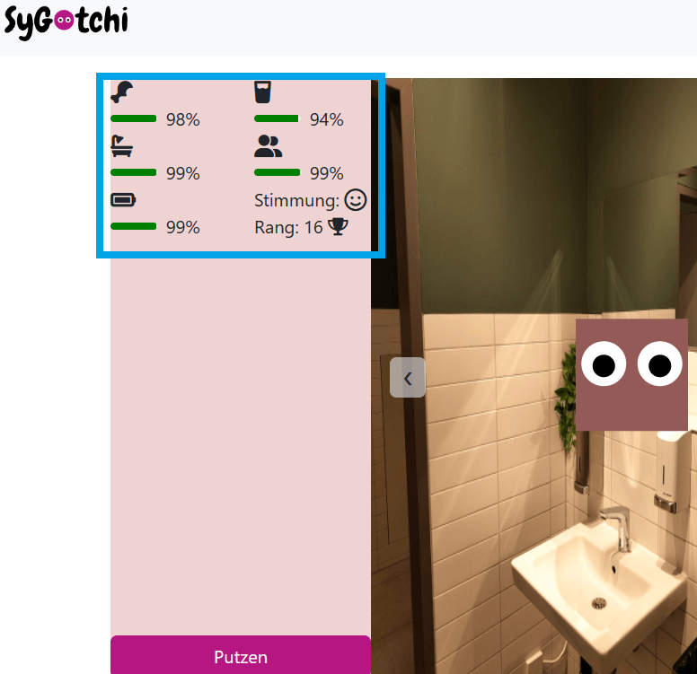

Die Statusbalken zeigen was dein Sygotchi gerade braucht. Sie werden mit der Zeit kleiner. Wenn einer der Balken 0 erreicht ist das Spiel verloren.
Durch das Drücken der Knöpfe in einem Raum füllst du die jeweiligen Balken auf.
Hier kannst du deinen Sygotchi einmalig erstellen.
Mit den Pfeilen an den Seiten kannst du die Räume wechseln.
Punkte kann man nur durch Aktionen bekommen. Sie zeigen deinen Fortschritt und bestimmen deinen Platz in der Rangliste.
| Action | Score | Cooldown |
|---|---|---|
| Drink | +2 | 10 Min. |
| Feed | +4 | 20 Min. |
| Clean | +8 | Muss mind. 30% dreckig sein |
| Play | +6 | 30 Min. |